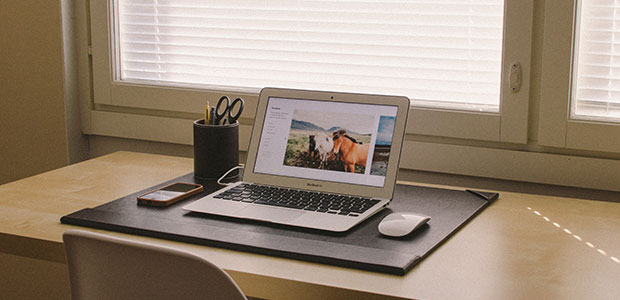

私事ですが、現在パソコンを新調しようと考えています。現在使っているのは、2年ほど前に買った「Surface pro 2」という、タブレット型とノートパソコンが一体化したような機種です。ほどよくコンパクトでほどよく高性能なところからかなり気に入っていたのですが、最近どうも調子が悪いのです。ワープロソフトと表計算ソフトを開いて、そこからさらにブラウザを開いたら、なぜか挙動が重くなってしまいます。仕事柄文章を書くことがとても多いため、これは死活問題です。
そこで新調を思い立ち、いろいろ調べていると、これまたディープな世界が広がっていました。私はパソコンをいろいろなところに持ち歩くタイプであるため、軽さをとても重視します。今のパソコンは大体1.2kg程度。一般的には軽い部類に入りますが、私としてはまだまだ重く感じます。これまでにいろいろな電子機器を使ってきた経験から、どうやら私は1kgを越えると持ち歩くのが面倒くさくなるようです。そこで、機種選定の基準として「1kg」を立てて情報を集め始めました。
お店に行ってみると、「東芝」「NEC」「Panasonic」「富士通」といった有名どころの日本メーカーが売り場の半分ほど、そして「Asus」や「Lenovo」などアジアのブランドと「apple」「Dell」のようなアメリカブランドが残りを占めています。一通り眺めてみると、1kgを切っていて、かつある程度の性能があるパソコンは「NEC」「Panasonic」「Apple」の三者に絞られているようです。軽さ以外のポイントが分からないのもあって、店頭に置いてある見本をいじりまわしながら店員さんに説明を聞きます。すると、今や日常生活の一部になってしまったパソコンの背後にある様々なストーリーがでるわでるわ。特に1kgを切る軽さを実現するのはとても難しいようで、各社エンジニアが頭脳を結集して新しい仕組みを考え出しています。
本体の素材を金属にするか樹脂にするか、金属の中でもどの種類を使うと強度が保てるか。強度は保てないけれど抜群に軽い素材の場合には、構造的に強度を高める工夫をしますし、場合によってはディスプレイなど他の部分を軽量化することで対応したりもします。
さらに、「どこの重量を削るか」「どのように重量を削るか」という二つの問い加えて、軽量化を推し進めた際に発生する電池の保ちの問題や排熱の問題が立ちふさがります。これらの数百に及ぶ課題を、あるものは完璧に解決し、あるものは妥協的に解決して完成したのが、我々が驚く「軽さ」なのです。
インターネットで情報収集を重ねて検討を進めるうちに、なにやらパソコンに対する愛すら芽生えてきます。技術者と、製品開発を決断した経営陣の努力を思うと、どれも買ってあげたい気分になって、気がつけば「自分に必要な道具としてのスペックを満たしているかどうか」という冷静な視線を失ってしまいそうです。
今のところ、「Panasonic」のRZ4という機種か、「NEC」のLavie hybrid zeroという機種のどちらかが候補の最有力です。前者は世界最軽量の700g台、後者はA4ノートサイズの世界最軽量900g台。どちらも製作秘話をまとめたら本が一冊書けそうなほどです。
昔の記事でコーヒーメーカーのことを書いたことがありますが、身近な、当たり前のものを探っていくと、いろいろな感動に出会うことができます。この感動、人間の「創意工夫」に対する畏敬の念を幼いうちから学ぶことができれば、日々の勉強もどんどん楽しくなるはず。特に小学生のお子さんをお持ちの方は、お子さんが気に入っているおもちゃの仕組みを是非お子さんとご一緒に調べてみてくださいね！